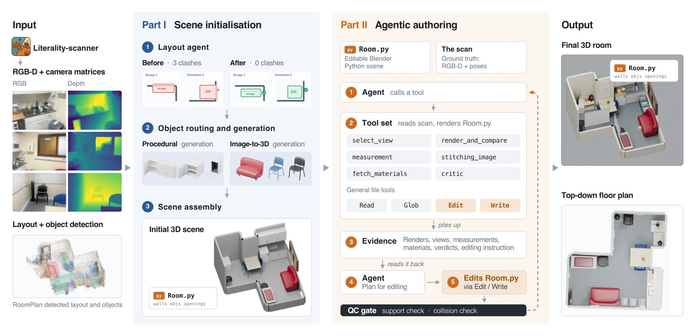
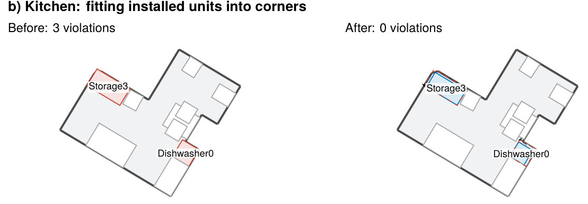
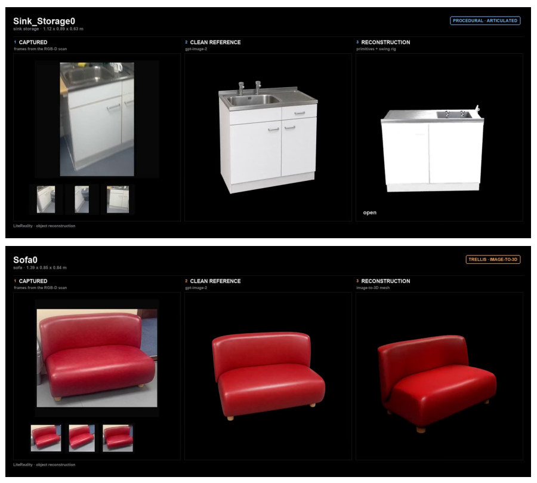
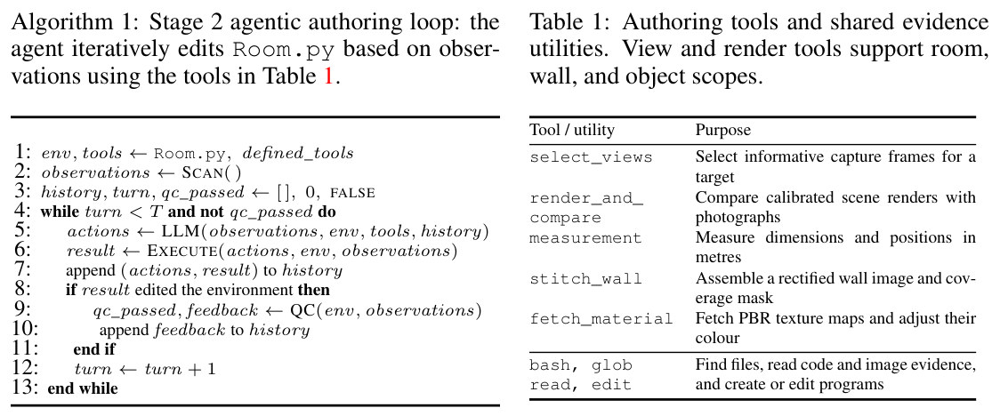
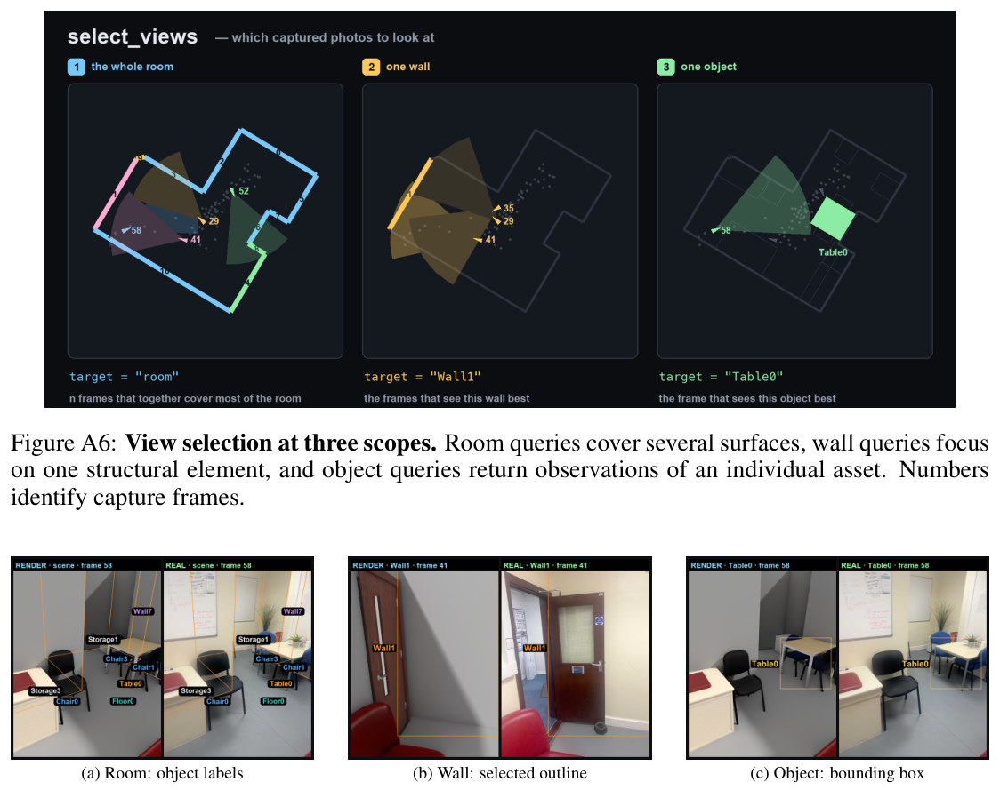
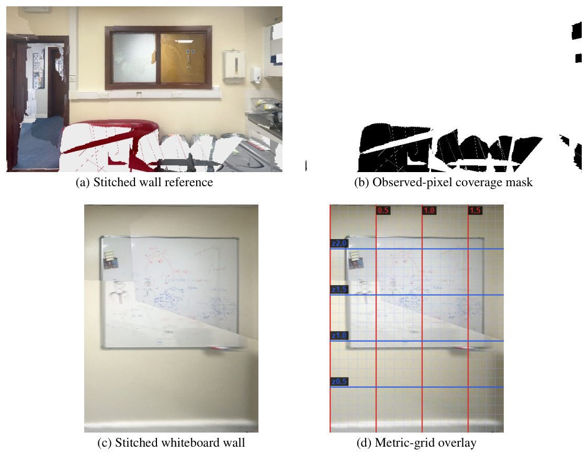
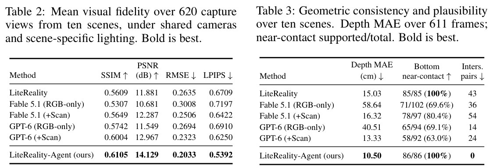
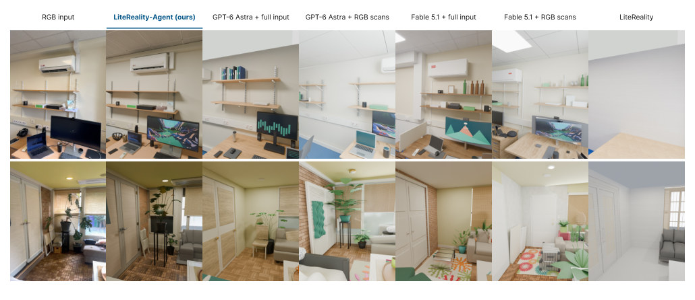
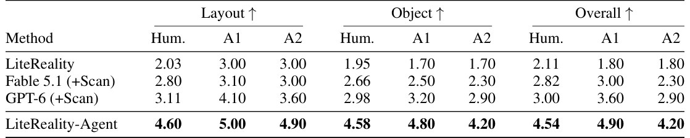
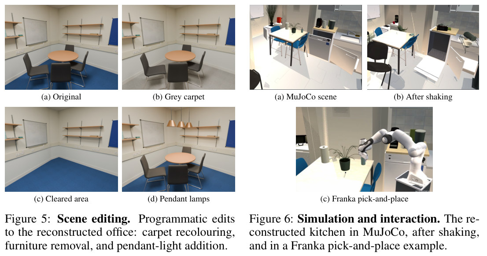

Agent-centric-real-to-sim · 归档于 2026-11-16
LiteReality-Agent
LiteReality-Agent: An Agentic System for Interactable 3D Indoor Scene Reconstruction
归档到 Agent-centric real-to-sim：coding agent 把手机 RGB-D 房间扫描写成可编辑、可导出 MuJoCo 的 Room.py；它的 observe–edit–verify harness 也值得 Robotic harness 参考
TL;DR
- Problem
- 手机扫一间屋，要得到和照片对得上、带铰接、能进仿真器的 3D 房间；固定流水线（LiteReality）缺墙面和固定件，直接让 GPT-6 Astra / Fable 5.1 写，尺度会漂、家具穿插悬空。
- Idea
- 整间房写成一个可执行的 Blender Python 程序
Room.py；coding agent 在 observe–edit–verify harness 里反复改它：三层选帧、同相机渲染-照片对比、墙面米制网格、PBR 材质，外加碰撞/支撑 QC 闸门和调用预算。 - Result
- 10 个房间、620 个视角：PSNR 14.129 dB（最强对手 GPT-6 +Scan 12.967）、深度误差 10.50 cm（13.33）、家具穿插 0 对（24）、人评整体 4.54（3.00）；但没有消融把 harness 单独拆出来。
Problem
一间真实厨房要变成可仿真场景：固定流水线只会预设的几步，通用 agent 量不准、也不查穿插和悬空
Running example · 后面每个 stage 都跟着它走
厨房（论文全程用的 running kitchen）：用 LiteReality 扫描 App（带 LiDAR 的 iPhone / iPad）走一圈 → RGB 帧 + 深度/置信度 + 每帧内参和位姿 + 点云 + RoomPlan 布局；布局里有墙、门窗和带类别、尺寸的物体框，如 Storage3 Dishwasher0 Sink_Storage0 Sofa0 Table0 → 想要：和照片对得上的 3D 厨房，水槽柜门能开，家具不穿插、不悬空，能导出 MuJoCo 让 Franka 操作。
flowchart LR IN["厨房 RGB-D 扫描
帧+深度+RoomPlan"]:::example IN --> A1["LiteReality
检索资产 · 固定流程"] A1 --> AX["墙上细节和固定件缺失
家具穿插 43 对"]:::gap IN --> B1["Astra / Fable
只给 RGB 照片"] B1 --> BX["没有米制尺度
深度误差
40.51 / 58.64 cm"]:::gap IN --> C1["Astra / Fable +Scan
直接写 Blender 房间"] C1 --> CX["不查碰撞和支撑
家具穿插 24 / 54 对"]:::gap
数字是十个场景的平均（Table 2、Table 3；斜杠前 GPT-6 Astra，后 Fable 5.1），论文没给厨房单独的数。LiteReality 一行“坏在哪”是推断：依据 §1（确定性流水线处理不了预设之外的情况）和 Fig. 3（它的渲染里墙上的架子、空调都没有）。Astra / Fable 两行的坏法来自 §4.4：加了扫描数据，深度误差大降，家具穿插反而变多。
根本问题：通用 agent 能写出房间，却没有工具把每次修改对回标定照片和米制尺寸，也没人检查穿插和悬空；固定流水线有证据，却不会推理和修改。 这篇的切入点：把重建变成“编辑一个可执行程序 Room.py”，再给 agent 一套专用取证工具、确定性 QC 闸门和调用预算。
Related work
| 相关工作 | 解决什么 | 怎么解决 | 和本文的区别 |
|---|---|---|---|
| 同一问题 · 别的解法 | |||
| 确定性 scan→资产流水线 LiteReality（本文前作）、MetaScenes | 扫描 → graphics-ready 的资产化房间 | 解析布局 → 从库里检索 CAD → 贴材质 → 组装 | 固定步骤、只能放库里有的资产 → 本文保留它的初始化，物体改为按扫描图像生成，再由 agent 对照照片改 Room.py |
| 前沿 coding agent 直接用 GPT-6 Astra（Codex）、Fable 5.1（Claude Code） | 从照片（± 扫描）写出整间 3D 房 | 通用 coding agent + 通用文件/命令工具 | 没有标定渲染对比、米制量墙、碰撞/支撑闸门和预算收尾 → 本文把这些做成专用工具和 gate（同样输入下对比，见 E1–E3） |
| Agentic real-to-sim / inverse graphics（本文属于这一类） AHa-3D、HARMONY、VIGA、Thinking in Blender、Agentic Real2Sim | 从图像或视频反推可执行场景或仿真 | agent 写代码 → 渲染 → 检查，迭代；AHa-3D 带相机、测量、检查工具 | 多为单图、单目或视频输入 → 本文针对米制 RGB-D 整间房：铰接资产 + 持久场景程序 + 标定多视角核对 + 显式碰撞/支撑检查（§2 末句） |
| 重建可交互世界、机器人用场景 Video2Game、DRAWER、HoloScene；RialTo、PolaRiS、ACDC | 给交互、策略微调或策略评测造环境 | 视频神经重建（DRAWER 带铰接）；RialTo / PolaRiS 建 twin，ACDC 用相似资产拼 digital cousin | 产出的场景不是可编辑的程序（推断）→ 本文整间房是 Room.py，可再用自然语言改；但本文没测机器人任务 |
| 相似做法 · 别的问题 | |||
| 用程序生成资产或场景 Articraft、Real2Code、Articulate-Anything；SceneSmith、Holodeck、SceneCraft | 生成铰接资产或室内布局 | LLM 写程序；Articraft 配专用 SDK 和自动验证 | 从文字或单图生成，不对应某间真实房间 → 本文 procedural 分支沿用 Articraft 的 object.py，但每个物体和每次编辑都以扫描为证据 |
来源：论文 §1、§2 Related Work 和 §4.1 的 baseline 设置，未另行检索。只有 LiteReality、Astra、Fable 三家有对比数字。RialTo、PolaRiS、ACDC、Agentic Real2Sim 在 library 里有页面。
Level 1 · Big picture
重建 = 编辑一个程序：初始化写出第一版 Room.py，agent 在 harness 里对照扫描一轮轮改它，过了闸门再导出

Room.py；闸门约束 authoring 并检查几何和支撑。怎么读这张图
- 左栏 Input：Literality-scanner 给 “RGB-D + camera matrices”，三组 RGB / Depth 就是厨房；下面 “Layout + object detection” 是 RoomPlan 检测出的布局和物体框。
- Part I ① Layout agent：“Before · 3 clashes” 里 Storage 3、Dishwasher 0 撞墙 → “After · 0 clashes”。
- Part I ② Object routing and generation：Procedural generation（橱柜类，可铰接）和 Image-to-3D generation（红沙发、蓝椅、黑椅）两条路。
- Part I ③ Scene assembly：“Initial 3D scene” 和它对应的第一版
Room.py（walls objs openings）。 - Part II 顶部两格：
Room.py（Editable Blender Python scene，agent 唯一能写的东西）和 The scan（Ground truth: RGB-D + poses，只读）。 - Part II ①→⑤：Agent calls a tool → Tool set 读扫描、渲染
Room.py（select_view、render_and_compare、measurement、stitching_image、fetch_materials、critic，加通用 Read / Glob / Edit / Write，橙色的 Edit / Write 是会写的两个）→ Evidence piles up（渲染、视角、测量、材质、判定、编辑指令）→ Agent reads it back、做计划 → EditsRoom.pyvia Edit / Write。 - 底部黑条 QC gate：support check · collision check；橙色虚线回到 ①，没过就继续改。
- 右栏 Output：Final 3D room（还是那份
Room.py）和 Top-down floor plan。
flowchart TD I["Input · RGB-D 扫描
厨房：帧+深度+RoomPlan"]:::example --> P1["Part I · 初始化
修框 → 生成物体 → Room.py"] P1 --> P2["Part II · 编写循环
取证 → 改 Room.py → QC"]:::win P2 --> O["Output
Blender 房间 + MuJoCo"]
Level 2 · Stages
6 个 stage：前 3 个确定性地写出第一版 Room.py，后 3 个是 agent 改、闸门验、导出
flowchart TD
subgraph P1["Part I · 初始化"]
direction LR
S1["1 · Layout Agent
3 处违规 → 0"] --> S2["2 · 物体重建
水槽柜 object.py"]
S2 --> S3["3 · 组装 Room.py
白墙初始厨房"]
end
subgraph P2["Part II · agent 编写"]
direction LR
S4["4 · Authoring
帧 58 渲染对比"]:::win --> S5["5 · QC 闸门
碰撞 · 支撑"]:::win
S5 --> S6["6 · MuJoCo 导出
摇晃 + Franka"]
S5 -.-> S4
end
P1 --> P2
click S1 href "#stage-1"
click S2 href "#stage-2"
click S3 href "#stage-3"
click S4 href "#stage-4"
click S5 href "#stage-5"
click S6 href "#stage-6"
点击 stage 展开 Level 3 细节；虚线 = QC 没过就退回 authoring。贯穿 stage 3–6 的机制单独一块：Room.py 怎么被改、怎么被执行。
Level 3 · Details
每个 stage 的细节
Stage 1 Layout Agent：先把 RoomPlan 的框修干净 带噪的 RoomPlan 物体框 → 修好的框 + 场景图
- Why：框决定后面的裁图、生成尺寸和摆放；出墙、嵌墙、悬空、互相穿插的框不先修，错误会一路带进资产和最终房间（§3.2、App. B.2）。
- 场景图：节点 = 房间、墙面、门窗、物体；关系 = support（每个物体只有一个支撑父节点）、wall adjacency、functional group、expected containment。
- 区分两种“在一起”：椅子属于桌子的 functional group，但支撑它的是地面；椅子塞在桌下的框重叠是预期的，不算错。
- 检查：出房间、嵌进墙、没有支撑、不相容的重叠。
- 修复顺序：先确定性搜索（贴墙、贴角、分开、微调尺寸）；几何解决不了才让可选的图像 agent 提议：平移、改尺寸、贴一或两面墙、把合并的框拆回原成员。图像 agent 看得到当前框、附近墙和物体、违规内容、参考照片和被拒提议的反馈。
- 有界：相对原扫描累计水平位移 ≤ 0.6 m、竖直 ≤ 0.08 m；单轴尺寸改动 ≤ 15%（桌、书桌、椅、沙发、床），其他类 ≤ 35%；不许删实测物体来消违规（App. B.1）。
- 接受规则：候选布局先比违规数、再比违规总量；必须保住已有锚点、满足累计上限、让几何分数变好才保留；被拒的不动已接受的布局。
- 停止：验证通过、连续没有进展，或用满 6 轮 agent 辅助。
flowchart TD a["RoomPlan 物体框
Storage3 · Dishwasher0"] --> b["场景图 + 几何检查
3 处越界或撞墙"]:::gap b --> c["确定性搜索
贴墙 · 贴角 · 分开 · 微调"] c -->|仍未解决| d["图像 agent 提议
平移 · 改尺寸 · 拆框"] c --> e["有界接受
各移约 5.3 cm"]:::win d --> e

- 左 “Before: 3 violations”：红框是要改的框，Storage3（左上）越过墙线，Dishwasher0（右下）跨出房间边界。
- 右 “After: 0 violations”：蓝框是修正后的位置，红虚线是原脚印，小箭头是中心平移。
- 灰框和墙：没动的上下文。
Running example 在这一步
Storage3 和 Dishwasher0 各移约 5.3 cm，两个水平尺寸各缩约 8.5 cm，3 处边界/墙违规 → 0（App. B.2）。全部 10 个场景：违规数 30 → 0，8 个场景有改动，107 个框里 29 个被移动、4 个改了尺寸——都是确定性搜索解决的，保存的 runs 没用上图像 agent，所以它的额外好处没被测到。
Stage 2 物体重建：每个物体按扫描里自己的照片生成 每个物体的扫描视角 → 静态或铰接资产 + 物理参数
- Why：LiteReality 从库里检索资产，房间只能放库里有的东西；这里一律从扫描图像生成（§3.2）。
- 参考图：选几张扫描视角，交给图像生成模型出一张干净参考图（Fig. A5 标的是 gpt-image-2）。
- 路由：结构化或铰接的物体 → procedural；外观复杂、基本静态的 → TRELLIS.2 image-to-3D。
- Procedural 分支：照 Articraft，一个 coding agent 写
object.py：几何、分开的活动部件、关节（轴、枢轴、限位）。 - 网格拒收：长宽比离谱、断开的碎片、大片平的边界面、底部过密（把地面或背景熔进来了）。
- 椅子重试：不合格就换 seed 重出参考图和网格，再查一次；预算用完则保留原资产并记下失败（App. B.3）。
- 物理：作者写的质量或密度优先；否则 质量 = 类别占用密度 × 包围盒体积，按几何体积分给各 link；惯量和质心按 link 几何算；摩擦和恢复系数按材料名先验；每条物理记录保留来源。
- 碰撞体：近凸部件用一个 hull，大的凹部件做凸分解，分解预算随 link 质量变。
- 单物体 MuJoCo 检查：短距离下落、逐个关节释放、倾斜重力滑动；报告穿透、分离、不稳定运动和摩擦行为，进房间前筛掉不能用的资产。
flowchart TD a["扫描里的视角
水槽柜的几帧"] --> b["干净参考图
gpt-image-2"] b --> c["Procedural object.py
Sink_Storage0 铰接"] b --> d["TRELLIS.2 图生 3D
Sofa0 静态网格"] c --> e["物理 + 凸碰撞体
单物体 MuJoCo 检查"]:::win d --> f["网格检查
椅子不合格就重试"]:::win

- 每行三格：1 CAPTURED（扫描帧）→ 2 CLEAN REFERENCE（gpt-image-2）→ 3 RECONSTRUCTION。
- 上行 Sink_Storage0：“sink storage · 1.12 x 0.89 x 0.63 m”，右上角 PROCEDURAL · ARTICULATED；重建由图元加 swing rig 搭成，画面标 open。
- 下行 Sofa0：“sofa · 1.39 x 0.85 x 0.84 m”，标 TRELLIS · IMAGE-TO-3D；一整块网格，没有活动部件。
- 注意：被遮挡的部分是补全的估计，核对保真度时仍以原始扫描为准（App. B.3）。
object.py 里单独的活动部件，这是 PDF 静图看不出的。Running example 在这一步
水槽柜 Sink_Storage0（1.12 × 0.89 × 0.63 m）写成 object.py，柜门可开；红沙发 Sofa0（1.39 × 0.85 × 0.84 m）走 TRELLIS.2；厨房的蓝椅、黑椅也走 image-to-3D（Fig. 2 Part I ②），所以适用椅子重试环——这间厨房有没有触发，论文没报告。
Stage 3 组装：写出第一版 Room.py 修好的框 + 资产 → 初始房间和它的 Room.py
- Why：后面每一次修改都要落在同一个可执行、可重建的表示上。
- How：房间外壳（墙、门窗开口）和各物体按修正后的尺寸、位姿放好。
Room.py里有：房间、物体实例、材质、后加的几何；procedural 资产各自保留object.py。- 它就是 agent 的持久工作区：改动写进代码，重建场景就能复现（§3.2）。
flowchart LR a["修好的框
Storage3 等"] --> c["Room.py
walls · objs · openings"] b["资产
object.py · 网格"] --> c c --> d["初始厨房
白墙、无小物件"]:::example
Running example 在这一步
初始厨房：墙是白的，橱柜、桌椅、沙发已就位，但没有白板、墙面材质、固定件和小物件——Fig. A3 的说明写明这些留给 authoring。
Stage 4 Agentic authoring：observe–edit–verify 循环 第一版 Room.py + 只读扫描 → 改好的 Room.py
- Why：初始房间只有外壳和大件，墙面外观、固定件和小物件留给 authoring（Fig. A3）；这些由 agent 看证据决定，而工具给的都是能对回扫描的证据（§3.3）。
- 可写的只有程序：
Room.py和各object.py；扫描是只读的证据。 - 四个有序模块：① 墙面材质 → ② 固定件和灯光 → ③ 小物件 → ④ 用多视角渲染细修已有 procedural 资产的几何、外观和铰接；每个模块在上一个的结果上做。
- 可维护性约束：新加的几何必须编成有名字的物体，并声明
rests_on（支撑）或attached_to（附着），后面的 agent 才找得到、改得动。 - 改完必重建：改过的场景和物体程序先重建再渲染，对比的永远是当前这一版。
flowchart TD A["① Agent 调工具
select_views Table0"] --> T["② 工具读扫描、重建并渲染
帧 58 渲染 + 照片"] T --> E["③ 证据进 history
标注图 · 米数 · 贴图"] E --> P["④ Agent 读证据、计划"] P --> W["⑤ Edit / Write Room.py
按网格放白板"]:::win W --> Q["QC
碰撞 · 支撑"] Q -.->|反馈进 history| A

| 符号 | 白话 | 厨房里的值 |
|---|---|---|
env | 可写的环境，就是 Room.py | 初始厨房的 Room.py |
tools | Table 1 的工具（defined_tools） | select_views、render_and_compare… |
observations | SCAN() 读进来的扫描，只读 | 厨房的帧、深度、位姿、RoomPlan |
history | 之前所有动作、结果和 QC 反馈 | 逐轮累积 |
turn / T | 已用轮数 / 轮数上限 | T 论文没给 |
actions | LLM 这一轮发出的工具调用或编辑 | 取 Table0 看得最清楚的帧 |
result | 执行后的返回：证据或改动 | 帧 58 的渲染-照片对 |
qc_passed, feedback | QC 过没过、查出了什么 | 碰撞 / 支撑报告 |
怎么读这张图
- 第 1–3 行：环境就是
Room.py，扫描只读；历史清空，轮数 0，QC 未通过。 - 第 4 行：只要轮数没到上限（T）、QC 也还没过，就继续。
- 第 5–7 行：LLM 看扫描、
Room.py、工具和历史，发出动作（actions）；执行；动作和结果都记进历史。 - 第 8–10 行：只有这一步真的改了
Room.py才跑 QC，QC 的反馈也记进历史——下一轮 agent 就看得到哪里撞了、哪里悬空。 - 右边 Table 1：5 个专用工具 + 通用 bash / glob / read / edit；选视角和渲染的工具都支持 room、wall、object 三种范围。
停止规则两处说法有出入：Alg. 1 写“QC 通过即停”；§3.3.2 和 App. B.6 写“预算决定何时停，闸门决定过不过”，并强调“终止不是 QC 结论”。论文没把两者合成一条规则。
harness 给 agent 的工具（整理自 Table 1、§3.3.1、App. B.4–B.5）
| 工具 | agent 给什么 | 拿回什么 | 关键细节 |
|---|---|---|---|
select_views | 范围：整间房 / 一面墙 / 一个物体 | 帧号 | 房间：贪心挑互补帧盖住各面墙；墙：按墙在画面里的投影面积排；物体：按 render manifest 的可见度；设最小帧间隔去掉近重复 |
render_and_compare | 范围 + 帧 | 同一标定相机下的渲染和照片并排 | 先重建当前程序；房间视图标物体名，墙视图只描这面墙，物体视图画包围盒；不让模型自己去对齐两个不同视角 |
stitch_wall | 一面墙 | 正视拼接墙图 + 覆盖 mask | 墙面网格上每个像素对应一个 3D 点，投到候选帧取色；偏好正对、居中、近的帧，有深度就查可见性；不混合，没拍到的像素记进 mask |
measurement | 墙、物体或表面 | 以米为单位的尺寸和位置；墙图加刻度网格 | 红刻度 = 沿墙距离，蓝刻度 = 离地高度，读到的数直接写进 Room.py；凸出墙面的灯、杂物、家具要回看原始帧 |
fetch_material | 想要的材质 | PBR 颜色、粗糙度、法线贴图 + 可复用 recipe | 调色只改漫反射颜色，保留纹理图案 |
bash, glob, read, edit | 文件操作 | 文件内容、图片证据 | 找文件、读代码和图片、新建或修改程序；Fig. 2 里只有 Edit / Write 标为“会写” |
critic（只在 Fig. 2） | 渲染 + 照片 | 外观反馈 | 清单式模型评审（§3.3.2、App. B.6），补充确定性检查管不到的视觉差异 |
工具名三处不一致：Fig. 2 写 select_view、stitching_image、fetch_materials；仓库 default_registry.py 列的是 fetch_material、render、critic、select_views、grid、check_collisions（compile 是 render 内部用的，不是工具）。

- 上图 ① target = "room"：几帧合起来盖住大部分房间（帧 58、41、29、52 等）；扇形是视锥，彩色粗线是墙。
- ② target = "Wall1"：最能看清这面墙的帧 35、29、41。
- ③ target = "Table0"：最能看清这张桌子的帧 58。
- 下图 (a) Room：帧 58 的 RENDER 和 REAL 并排，两边同样标出 Storage1、Storage3、Chair0、Chair1、Chair3、Table0、Floor0、Wall7——哪里不一致，能直接追到名字。渲染里还没有白板和绿植，这正是 authoring 要补的（我的观察）。
- (b) Wall：帧 41 只描出 Wall1（门所在的墙）。(c) Object：帧 58 只框出 Table0。

- (a) Stitched wall reference：窗、门、纸巾盒都在；沙发和台面凸出墙面，被平面投影拉变形，还有接缝。
- (b) Observed-pixel coverage mask：白 = 拍到，黑 = 没拍到（集中在被家具挡住的下部）。
- (c) Stitched whiteboard wall：白板墙的拼接正视图。
- (d) Metric-grid overlay：红竖线 = 沿墙 0.5 / 1.0 / 1.5 m，蓝横线 = 离地 z0.5–z2.0 m；白板四边对着刻度读位置和尺寸，再写进
Room.py（论文没给读数）。
预算：没有自然的停止条件，就给一个（§3.3.2、App. B.6）
flowchart LR a["前 90% 调用
全部工具可用"] --> b["最后 10%
关掉探索和自检"] b --> c["重建 + 校验
QC 决定过不过"]:::win
- 会话有轮数和 tool-call 两个上限，具体数值论文没给；最后 10% 的调用关掉探索和自检，只让 agent 把编辑做完、存盘；比例可配置。
- 实现靠 pre-tool hook 关掉探索类工具；没有这种 hook 的 adapter 只能到预算硬停。无论哪种，存下的程序都还要重建、检查，到点停止不等于通过 QC。
项目页和代码仓库补充的 harness 细节（论文里没有）
- 博客：grid 是 agent “发明”的。工具出现之前，agent 在一次运行里用 Bash 手搓同样的网格 13 次，作者才把它做成工具。
- 博客：critic 的评分 prompt 归工具，不归 agent。严格程度因此是系统属性，不随 agent 当轮怎么问而变；“差一点”也判 fail，输出 pass/fail、分数和问题清单。
- 博客的预算图：每轮 100 次调用，第 85 次之后关掉 render、critic、select_views、grid、fetch_material；和论文写的“最后 10%”不同，以论文为准（比例可配）。
- 仓库 ARCHITECTURE.md：Claude Code provider 进程内挂能力工具，用 PreToolUse hook 在预算末段收尾，支持工具白名单；Codex provider 通过 stdio MCP 桥接工具，没有 pre-tool hook，预算只能硬停，shell 也收不走。
- 仓库 models.env 当前默认：
Room.pyauthoring、材质、QC 和 critic 走 Codex + gpt-6-astra；procedural 资产走 Claude（claude-opus-5）。论文没写实验用的是哪个模型。
Running example 在这一步
选帧：room → 帧 58、41、29、52 等；Wall1 → 35、29、41；Table0 → 58（Fig. A6）。对比：帧 58 的渲染和照片同样标出 Storage3、Table0 等，渲染缺白板和绿植（Fig. A7a）。测量：白板墙拉正、叠网格，按红/蓝刻度读出白板的位置和尺寸写进 Room.py（Fig. A8d）。按规则，墙上固定件用 attached_to、桌上小物件用 rests_on 声明（厨房的具体声明论文没列）。
Stage 5 QC 闸门：碰撞和支撑分开查 改好的 Room.py → 通过，或带着发现退回 authoring
- Why：Layout Agent 只看粗框；authoring 后要按真实网格再查——桌椅的框重叠本来合法，新加的物体也可能穿插或悬空（§3.3.2）。
- 碰撞：网格三角面相交才算撞；用凸近似估算修正平移；只水平移动没锚定的物体，修正量有上限；修正写回
Room.py→ 重建 → 再查；局部移动解决不了的写进报告（App. B.6）。 - 支撑：对每个声明的支撑，比物体底面和支撑顶面的高度，再看脚印重叠。
- 阻断项：缝超过 1 cm、穿透超过 2 cm、缺少或未知的支撑声明；脚印重叠不到一半只报告复查。
- 例外：没声明支撑的落地家具用 5 cm 地面容差；结构附着（
attached_to）不查重力支撑。 - 铰接：检查铰接资产仍保留分开的活动部件。
- 视觉：确定性检查只管几何；外观差异交给另外一个清单式模型评审（critic）。
- 退回：没解决的发现回到 authoring。几何检查都是确定性的，只有外观交给模型（App. B.6）；博客的说法是“这一层是算术，不是模型给自己打分”。
flowchart TD R["重建后的 Room.py
Table0 + 蓝椅"] --> C["碰撞检查
网格相交 → 凸近似估位移"] R --> S["支撑检查
底面对声明的支撑面"] C --> F["有界修正
水平推开 · 写回 · 重查"]:::win S --> B["阻断项
缝超 1 cm · 穿透超 2 cm"]:::gap F -->|局部移动修不了| O["报告 → 退回 authoring"] B --> O
Running example 在这一步
厨房的 Table0 和蓝椅正是论文点名的情况：椅子塞在桌下，框重叠合法，但网格真的相交就要把没锚定的椅子水平推开、写回、重建再查；桌上新加的小物件若声明 rests_on 桌面，底面离桌面超 1 cm 或穿进 2 cm 以上就阻断。厨房里具体触发了哪些发现，论文没报告；十个场景的结果见 E2（家具穿插 0 对）。
Stage 6 Sim-ready 导出：MuJoCo 通过的 Room.py + 布局 + 外观 + 物理记录 → MJCF 场景
- 四个来源：
Room.py的外壳几何、room_layout.json的物体位姿和支撑声明、Room.glb的外观、每个物体的物理记录（App. B.6）。 - 关节：墙拆成绕门窗开口的结构 box；墙和附着的固定件固定；可动物体给 free joint；铰接部件按指定的 hinge 或 slide joint。
- 碰撞形状：分开的碰撞形状保住桌下和柜内的空间。
- 缩放：资产被缩放时，推导出的质量随体积变，作者给的质量保留，惯量按放置后的几何重算；碰撞体边界对照物体边界检查。
- 驱动：有 effort 元数据的关节加电机 actuator；速度上限留作控制器元数据；恢复系数存在资产里，但 MJCF 导出器不用。
- 兜底：authoring 新加、没有物理记录的物体，导出时估计质量和碰撞体，并写进导出报告。
flowchart LR a["Room.py
外壳几何"] --> X["Exporter
位姿 · 缩放 · 质量"] b["room_layout.json
位姿 + 支撑"] --> X c["Room.glb
外观"] --> X d["物理记录
质量 · 惯量 · 碰撞体"] --> X X --> M["MuJoCo MJCF
free · hinge · slide"]:::win
Running example 在这一步
厨房导出后在 MuJoCo 里摇晃（Fig. 6b），并做了一次 Franka pick-and-place（Fig. 6c，见 E5）。论文说明这些演示不测机器人任务成功率，也不辨识真实动力学（§4.5）；质量、摩擦来自先验，没有真值（App. F）。
贯穿 3–6 Room.py 怎么被改、怎么被执行 一个程序 = agent 的工作区、渲染的源头、导出的输入
- 是什么：一个 Blender Python 脚本（Fig. 2：“Editable Blender Python scene”），定义房间外壳、物体实例和摆放、材质、后加的几何；procedural 资产的构建配方在各自的
object.py里（App. B.4）。 - 谁能改：只有 agent，只通过 Edit / Write 文件工具；扫描是只读的 ground truth。
- 怎么执行：工具在渲染前先重建改过的
Room.py/object.py，再从标定相机渲染；“重建这些程序”就是模块之间的交接（App. B.4）。 - QC 也走同一条路：闸门的修正写回
Room.py，重建之后再查（App. B.6）。 - 收尾：预算用完后程序重建、校验；导出器读
Room.py、room_layout.json、Room.glb和物理记录（App. B.6）。 - 好处：场景可读、可复现、可直接再编辑；后续的自然语言编辑也只是改
Room.py（Fig. A9）。
flowchart TD E["Agent：Edit / Write
Room.py · object.py"] --> B["重建
Blender 场景"] B --> R["渲染 · 量测 · QC
同一标定相机"] R -->|证据回到 agent| E B --> X["导出
Room.glb · MJCF"]:::win
Running example 在这一步
厨房从 stage 3 的白墙版 Room.py 起步；每次改完（比如按网格加白板），工具先重建再渲染帧 58 去和照片比；QC 的平移修正也写回同一个文件；最后同一份程序编译成 Blender 房间并导出 MuJoCo。
Recap：例子覆盖了论文的哪些 idea
| 论文里的 idea | 例子里在哪体现 |
|---|---|
重建 = 编码，Room.py 是持久工作区 | Stage 3 / 贯穿块：初始厨房写成 Room.py，之后的修改、QC 修正、导出都经过它 |
| Layout Agent：场景图 + 有界修复 | Stage 1：Storage3、Dishwasher0 各移约 5.3 cm、缩约 8.5 cm，3 → 0 处违规 |
| 物体路由：procedural vs image-to-3D | Stage 2：水槽柜 Sink_Storage0 写 object.py（门可开）；红沙发 Sofa0 走 TRELLIS.2 |
| 网格拒收 + 椅子重试 | Stage 2：厨房的蓝椅、黑椅走 image-to-3D，适用重试环（是否触发未报告） |
| 物理元数据 + 单物体仿真检查 | Stage 2：质量 = 密度 × 包围盒体积，惯量按几何，摩擦按材料；下落、关节释放、斜面测试 |
三层选帧 select_views | Stage 4：room → 帧 58、41、29、52 等；Wall1 → 35、29、41；Table0 → 58 |
同相机 render_and_compare | Stage 4：帧 58 渲染和照片同样标出 Storage3、Table0 等，渲染缺白板和绿植 |
| 墙面拼接 + 米制网格 | Stage 4：白板墙拉正，对着红/蓝刻度读位置和尺寸 |
| PBR 材质 + 调色 | Stage 4 模块 ①：墙面材质（厨房墙用了什么，论文没写） |
四个有序模块 + rests_on / attached_to | Stage 4：墙 → 固定件和灯 → 小物件 → 细修资产 |
| 预算收尾 | Stage 4：最后 10% 调用关掉探索和自检，只落盘 |
| 碰撞 + 支撑闸门 | Stage 5：Table0 与蓝椅框重叠合法，网格相交才修；支撑缝超 1 cm 即阻断 |
| MuJoCo 导出 | Stage 6：厨房摇晃 + Franka pick-and-place（Fig. 6） |
| 自然语言 / 程序化编辑 | Results E5：论文用的是办公室（地毯、清场、吊灯），不是厨房 |
| 主结果：胜过直接用 Astra / Fable | Results E1–E4：十个场景平均，厨房没有单独的数 |
Results
同样的照片和扫描下，LiteReality-Agent 的视觉、几何和人评都排第一；但这是整套系统的胜利，没有消融把 harness 单独拆出来
顺序同论文 §4：E1 视觉保真（对直接用 Astra / Fable）→ E2 几何与物理合理性 → E3 只给 general agent 加扫描数据够不够 → E4 人和 agent 评委 → E5 编辑与仿真（只有定性）。比的全是重建质量；论文没报告运行时间、调用次数或成本。
E1比直接用 GPT-6 Astra / Fable 5.1 更像真实照片吗？§4.2 · Table 2 · Fig. 3

直接用前沿模型 vs 套上 harness（整理自 Table 2–4，十个场景平均）
| 方法 | 怎么跑 · 输入 | PSNR ↑ | LPIPS ↓ | 深度误差 cm ↓ | 底部近接触 ↑ | 穿插对 ↓ | 人评整体 ↑ |
|---|---|---|---|---|---|---|---|
| GPT-6 Astra (RGB-only) | Codex · 只给照片 | 11.549 | 0.6910 | 40.51 | 65/94 (69.1%) | 14 | 未评 |
| GPT-6 Astra (+Scan) | Codex · 照片 + 扫描 | 12.967 | 0.6250 | 13.33 | 58/92 (63.0%) | 24 | 3.00 |
| Fable 5.1 (RGB-only) | Claude Code · 只给照片 | 10.681 | 0.7197 | 58.64 | 71/102 (69.6%) | 36 | 未评 |
| Fable 5.1 (+Scan) | Claude Code · 照片 + 扫描 | 12.287 | 0.6422 | 16.32 | 78/97 (80.4%) | 54 | 2.82 |
| LiteReality | 确定性流水线 · 照片 + 扫描 | 11.881 | 0.6709 | 15.03 | 85/85 (100%) | 43 | 2.11 |
| LiteReality-Agent | 本文 harness · 照片 + 扫描 | 14.129 | 0.5392 | 10.50 | 86/86 (100%) | 0 | 4.54 |
“扫描”= 深度和置信度、相机内参和位姿、点云、RoomPlan 布局（§4.1、App. C）。人评只评了 +Scan 两个 agent、LiteReality 和本文（Table 4）。

- 七列从左到右：RGB input（真实照片）→ LiteReality-Agent (ours) → GPT-6 Astra + full input（即 +Scan）→ GPT-6 Astra + RGB scans（即 RGB-only）→ Fable 5.1 + full input → Fable 5.1 + RGB scans → LiteReality。
- 上行办公室：照片里墙上有空调、两层架子、显示器；LiteReality 一列墙上几乎是空的（我的观察）。
- 下行有砖墙和绿植的房间：几个 agent baseline 都摆了植物和家具，但样式和位置跟照片对不上（我的观察）。
- 注意：说明写“三个场景”，图里只有两行。
- 说明什么
- 视觉保真四项全最好。PSNR 14.129 dB，比最强对手 GPT-6 (+Scan) 的 12.967 高 1.162 dB，LPIPS 0.5392 比它的 0.6250 低 13.7%；比 LiteReality 高 2.248 dB、LPIPS 低 19.6%（§4.2）。
- 在故事里
- 摘要的核心主张：同样的输入，orchestration（工具 + 流程 + 验证）让重建比“前沿模型直接用”更像真实房间。
- 指标
- SSIM、PSNR、RMSE、LPIPS（AlexNet，v0.1），渲染 vs 参考照片，都在 960 × 720，不做对齐、裁剪或色彩校正；620 个视角逐帧等权平均，所以视角多的场景权重大（App. C）。
- 怎么评测
- 10 个室内场景、620 个拍摄视角（每个场景 27–91 个）；6 种方法×输入在同一批 scene–frame 对上评，共 3,720 对（App. C）。
- baseline：GPT-6 Astra 在 Codex 里、Fable 5.1 在 Claude Code 里，各跑 RGB-only 和 +Scan；LiteReality 和本文拿到与 +Scan 相同的扫描信息（§4.1）。论文没写 baseline 的 prompt、轮数或可用工具。
- 渲染：Blender 5.2 Cycles，最多 64 spp + OptiX 降噪；所有方法共用本文场景的灯光和色彩管理，这套灯光没对照片标定——可能对本文有利（推断）。
- 评测视角就是拍摄视角，不是 held-out 新视角（§4.1）；而本文的 agent 编写时正是拿这些照片做 render_and_compare——也对它有利（推断）。
- 论文没说本文内部用哪个 LLM；仓库 models.env 当前默认 authoring 走 Codex + gpt-6-astra。若实验也是如此，GPT-6 (+Scan) 和本文的差距主要来自 harness 和流水线，而不是模型（推断，未证实）。
E2几何对不对、家具会不会穿插或悬空？§4.3 · Table 3
- 说明什么
- 几何误差最低、家具零穿插。深度 MAE 10.50 cm，比 GPT-6 (+Scan) 低 21.2%，比 LiteReality 的 15.03 低；86 件家具全部底部近接触（100%）；家具穿插 0 对，LiteReality 43、GPT-6 (+Scan) 24、Fable 5.1 (+Scan) 54（§4.3）。
- 在故事里
- 对应 Layout Agent 和 QC 闸门：通用 agent 有了扫描也会穿插、悬空（见 E3），本文靠显式碰撞/支撑检查压到 0。
- 指标
- 深度 MAE：渲染深度 vs 采集深度，只用所有输出（含 RoomPlan）都有效的像素，611 帧逐帧平均（App. D）。
- 底部近接触：家具至少有一个底部采样点离外部支撑面 1 cm 以内的比例；不要求每条腿都着地。
- 家具穿插：三角面严格相交的家具对数（0.1 mm 平面容差，不是穿透深度阈值）；每个场景每对只计一次，十个场景求和；不算物体内部、也不算家具和建筑之间。
- 怎么评测
- 各方法识别出的家具数不同（85–102 件），近接触率和穿插数要连同家具数一起看（§4.3、App. D）。
- 这些只是物理合理性的几个侧面，不等于物理有效（§4.3）。
- 评测指标和 authoring 闸门不是同一把尺：闸门用“缝超 1 cm、穿透超 2 cm 即阻断”，评测用“1 cm 内近接触”（App. B.6）。
E3只给 general agent 加扫描数据，够不够？§4.4 · Table 2–3
论文这一节只有文字，表格按 §4.4 引用的 Table 2、Table 3 数字整理。
| RGB-only → +Scan | GPT-6 Astra（Codex） | Fable 5.1（Claude Code） |
|---|---|---|
| PSNR (dB) ↑ | 11.549 → 12.967 | 10.681 → 12.287 |
| 深度误差 (cm) ↓ | 40.51 → 13.33（−67.1%） | 58.64 → 16.32（−72.2%） |
| 家具穿插对 ↓ | 14 → 24 | 36 → 54 |
| 底部近接触 ↑ | 69.1% → 63.0% | 69.6% → 80.4% |
- 说明什么
- 扫描数据修好了尺度，没修好物理。两个 agent 加了扫描，视觉四项和深度误差都变好；但家具穿插反而变多（14 → 24、36 → 54），GPT-6 的底部近接触还从 69.1% 降到 63.0%（§4.4）。
- 在故事里
- 把差距归到“缺 harness（验证和闸门）”而不只是“缺数据”。但论文自己说：这些对比只支持整套系统，不能把 harness 和其他组件分开（§4.4）。
- 指标
- 同 E1、E2。
- 怎么评测
- 同一批照片；+Scan 加 LiDAR 深度和置信度、内参、位姿、时间戳、点云和 RoomPlan USDZ 布局（App. C）。
- 穿插数也取决于各自的家具数，不完全可比（§4.4）。
- 没有“本文去掉某个工具或闸门”的消融。
E4人和 agent 评委觉得哪个最像？§4.6 · Table 4 · App. E

- 说明什么
- 人评三项都最高。布局 4.60、物体 4.58、整体 4.54，比 GPT-6 (+Scan) 高 1.49 / 1.60 / 1.54；整体相似度的 65 次配对比较里赢 53、平 11、输 1；十个场景每一个的人评整体均分都是本文最高（App. E）。两个 agent 评委也把本文排第一、GPT-6 (+Scan) 第二，但绝对分数和人不同。
- 在故事里
- 补上像素指标之外的感知证据：人看着也更像。
- 指标
- 1–5 分，越高越像参考场景；布局（结构、物体位置和朝向）、物体（形状、尺度、外观）、整体，三项分开报，不合成总分（App. E）。
- 怎么评测
- 参考照片 + 同视角渲染 + 正交平面图；方法匿名，每个场景随机排位；每人评十个场景中的五个，四种方法 × 三项都评。
- 13 份有效提交 = 65 次 participant–scene 评估、780 个评分，每种方法每项 65 个；每个场景 3–11 人不等；3 份身份映射未核实的提交被排除（App. E）。
- 样本小、覆盖不均、评分相关，不构成统计显著；agent 评分不能代替人（§4.6）。A1、A2 是什么模型论文没说。
E5能编辑、能进仿真器吗？§4.5 · Fig. 5–6 · App. B.7

- Fig. 5 (a)→(d)：原样 → 地毯换成灰色（纹理不变）→ 清掉会议桌和四组椅子 → 桌上方加三盏吊灯（灯罩、吊线、光源，带天花板附着声明）。
- Fig. 6 (a)→(c)：厨房导入 MuJoCo → 摇晃之后物体移位 → Franka 在桌边做 pick-and-place。
- 说明什么
- 能编辑、能进 MuJoCo，但只有演示，没有测量。编辑不用重新扫描或重建；分开的刚体、支撑关系和关节让物理交互成为可能（§4.5）。
- 在故事里
- 撑起“可编程房间”和 “simulation-ready” 两个说法。
- 指标
- 无量化指标。论文明说不测机器人任务成功率、不辨识真实动力学（§4.5）；Fig. 5 是用可复现的编辑脚本渲染的，不代表 agent 自主编辑的成功率（App. B.7）。
- 怎么评测
- Fig. 5 四个变体都从同一个保存的办公室场景出发，相机、分辨率、渲染设置相同。
- 自然语言编辑的例子在 Fig. A9：露出砖墙、为站会清出地面、为看世界杯装饰，每条指令都落实为对
Room.py的编辑。
Limits
局限和开放问题
- 物理参数没有真值：主要靠语言模型推断和类别、材料先验，惯量按几何估；导出和一致性检查不能说明场景复现了真实动力学（App. F）。
- 布局一致不等于布局准确：RoomPlan 的尺寸、位姿错误会留在重建里；碰撞/支撑修正和视觉对齐都不保证恢复真实布局，也没有对实测布局的评测（App. F）。
- 规模：十个单间；更大、结构更多样的环境没测（App. F；项目博客说目前约 50 m² 以内的单间）。
- 没有消融：对比只支持整套系统，不能把 harness 和其他组件分开（§4.4）；grid、critic、预算等单个机制也没有消融。
- 评测偏向本文的可能：在拍摄视角而非 held-out 视角上评，共用的灯光来自本文场景、未对照片标定（§4.1、App. C）。
- 人评：13 份提交，覆盖不均、评分相关，不构成统计显著（§4.6）。
- 没报告：本文内部用的 LLM、轮数上限 T、tool-call 预算、运行时间和成本；Layout Agent 的图像 agent 在保存的 runs 里没用上（App. B.2）。
- 我的观察：Fig. 3 说明写“三个场景”，图里只有两行；Fig. 2、Table 1 和仓库的工具名不一致；Alg. 1 的“QC 通过即停”和 §3.3.2 的“预算决定何时停”说法不一。
For Agent-centric real-to-sim
对我们有什么用
- r2s-lite：pot-lid episode 第 9 次尝试靠宽松的成功规则“通过”、场景却是错的。照本文把两件事拆开：预算只管何时停，确定性闸门管过不过（“终止不是 QC 结论”）；阻断规则写死（支撑缝超 1 cm、穿透超 2 cm、缺支撑声明即阻断）；视觉评审交给 prompt 固定在工具里的 critic，不让 agent 自己出题。
- real2sim-anything-indoor（视频 → Blender 房间）是最近的同类，可直接搬：整间房一个
Room.py，每个新物体声明rests_on/attached_to；三层select_views；同一标定相机的渲染-照片对；墙面拼接 + 米制网格读坐标放固定件。前提是米制深度和相机位姿——只给 RGB 的 agent 深度误差 40.51 / 58.64 cm（Table 3），视频管线得先把尺度和相机解决。 - WorldClaw（prompt → 白盒场景 → Genesis）：导出侧可借“四来源 exporter，每条物理记录带来源，缺记录的新物体导出时估计并写进报告”；harness 侧可借仓库的 provider 接缝：同一套能力工具，Claude Code 进程内挂载、用 PreToolUse hook 在预算末段收尾，Codex 走 stdio MCP 只能硬停。